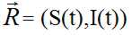
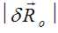
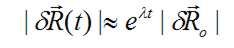
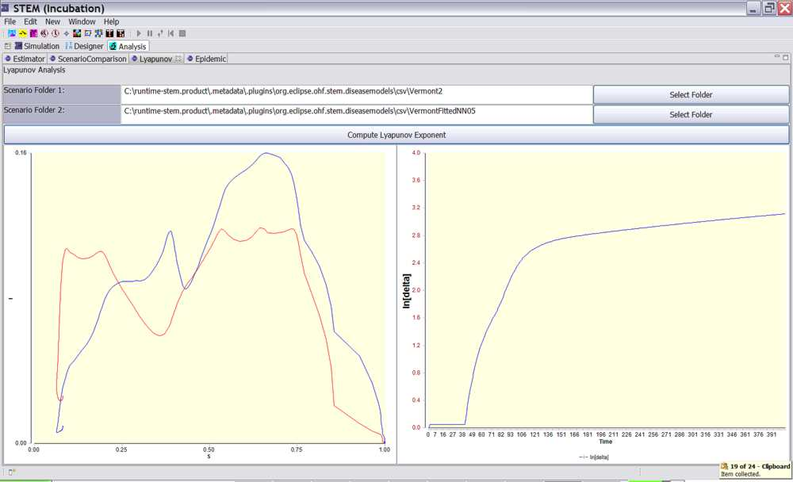

The Lyapunov View allows a user to apply tools developed to analyze dynamical systems. The RMS comparison view is a useful measure of the average difference between two scenarios. However, if a model and reference scenario each describe an epidemic that begins and end in the same state (zero infectious), the RMS error will eventually fall to zero as a function of time, even in case of a “bad” model. In addition to measuring the average error, it is useful to look for other measures that might provide a “fingerprint” for the spatiotemporal dynamics of an infectious disease. Like many dynamical systems, infectious disease is a process of many variables. However, it is often possible to capture the essential dynamics by looking at just a few system variables in an appropriate phase space. In its most general formalism, any dynamical system is defined by a fixed set of equations that govern the time dependence of the system’s state variables. The state variables at some instant in time define a point in phase space. A SEIR model defines a four dimensional phase space. An SI model defines a two dimensional space. Examining a reduced set of dimension may be thought of as taking slice through phase space (for example in the SI plane).
At the state of the system changes with time, the point (S(t), I(t)) in phase space defines a trajectory in the SI plane. Consider an epidemic that begins with one infectious person and virtually the entire population susceptible at t=0, S(0) ~ 1. The trajectory will begin at time zero along the S axis near 1. As the disease spreads, the susceptible population (S) will decrease and the infectious population (I) will increase. The detailed shape of the this trajectory will depend on the time it takes for the disease to spread to different population centers, as well as the (susceptible) population density function. The peaks and valleys along the trajectory in SI phase space proved a signature or fingerprint for an epidemic the shape of which depends on the disease, the disease vectors, the population distribution, etc. The mathematics of dynamical systems provide us with a formalism to compare trajectories in a phase space. Given a single set of rules (e.g., a disease model), two simulations that begin infinitesimally close together in phase space may evolve different in time and space. This separation in phase space can be measure quantitatively.
The Vector

defines a trajectory in SI space. The initial separation at time zero be defined as
.
The rate of separation of two trajectories in phase space will often obey the equation

where l is the Lyapunov Exponent. This exponent is a characteristic of the dynamical system that defines the rate of separation of infinitesimally close trajectories in phase space.
To use the Lyapunov view:
